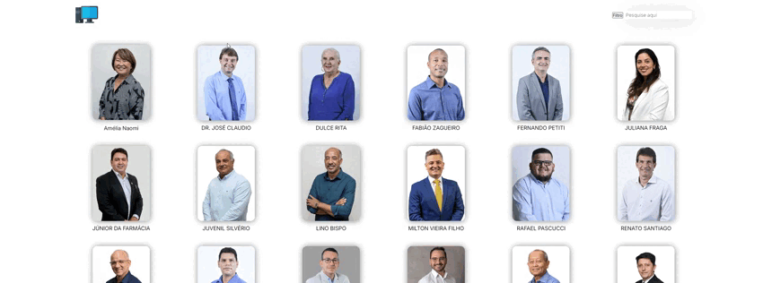

Sobre Mim
Sou estudante de Desenvolvimento de Software Multiplataforma com grande interesse em Ciência de Dados. Busco aprimorar minhas habilidades em programação e análise de dados para enfrentar desafios tecnológicos inovadores.
Currículo
- Formação Acadêmica: Cursando Desenvolvimento de Software Multiplataforma - FATEC
- Certificados: Programação CNC (GCodes), Código G (GCodes) Informática (Microcamp), Inglês Intermediário (Wizard), Espanhol Básico (Wizard)
- Experiências Profissionais: Desenvolver Programas CNC: A partir de desenhos técnicos ou modelos 3D, eu escrevo os programas em Código G, especificando todas as operações que a máquina deve realizar, como cortes, furos, roscas e outros processos de usinagem.
- Interpretar Projetos Técnicos: Antes de programar, eu leio e analiso os desenhos e especificações para entender os requisitos da peça que deve ser produzida, como dimensões, tolerâncias e materiais.
- Configurar as Máquinas CNC: Após escrever o programa, eu também sou responsável por configurar as máquinas, ajustando parâmetros como a velocidade de corte, o avanço da ferramenta e a posição exata das peças na máquina.
- Testes e Ajustes: Depois de programar a máquina, eu realizo testes para verificar se a peça está sendo produzida corretamente. Caso algo não esteja conforme o esperado, faço os ajustes necessários no programa ou nos parâmetros da máquina.
- Manutenção e Melhoria Contínua: Estou sempre atento à eficiência das máquinas e dos processos, buscando maneiras de otimizar os programas para aumentar a produtividade e reduzir falhas ou defeitos nas peças produzidas.
- Garantia de Qualidade: Como a precisão é essencial, tenho que garantir que as peças atendam aos altos padrões de qualidade estabelecidos, ajustando os programas quando necessário para evitar erros.
Projetos
Projeto API
Descrição: Minha equipe e eu desenvolvemos um site dedicado aos moradores de São José dos Campos, com o intuito de oferecer informações completas sobre os vereadores em exercício no mandato de 2021-2024. A plataforma também apresenta dados sobre o desempenho de cada parlamentar, ajudando os eleitores a tomar decisões mais informadas na escolha de seus candidatos para as eleições de 2024.
Tecnologias: Python, Pandas, Flask, HTML, CSS, AWS
 Veja o código no GitHubContato
- Email: victor.jesus11@fatec.sp.gov.br
- LinkedIn: linkedin.com/in/victorchagas
- GitHub: github.com/victorchagas